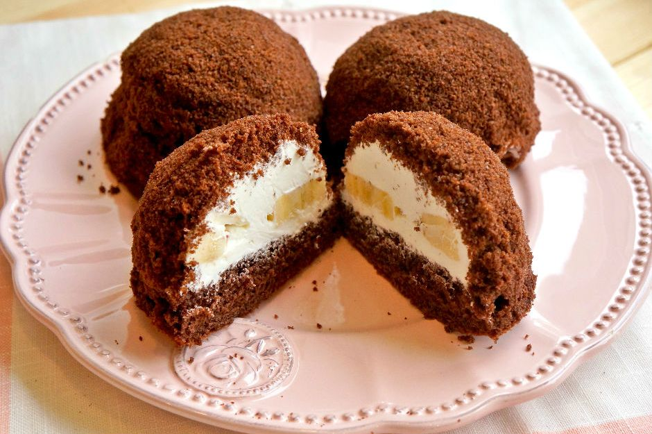

Tarif: Gökçen Mutaf
Köstebek pasta sevimli görüntüsüyle gönlümüze ve midemize taht kurarken bu
mini köstebek pastalar olayı bambaşka bir boyuta taşıyorlar.
Porsiyonluk olması servis kolaylığı sağlarken, içindeki krem şanti dolgusu
ve arasındaki muzla adeta zirveye oynuyor.

Kakaolu keki o kadar yumuşacık ve öylesine lezzetli ki tek bir kırıntısını bile ziyan
etmeyeceğinize eminiz. İlk bakışta bunu nasıl yapmışlar dedirtecek kadar farklı bir
sunumu olan mini köstebek pastalar, en güzel çay saatlerinizde sofralarınızda
yerini almaya, yorgunluk kahvelerinize arkadaşlık etmeye geliyorlar.
Ellerinize sağlık diyor ve afiyetler diliyoruz.
Kaç Kişilik: 4 kişilik | Hazırlama Süresi: 30 dakika | Pişirme Süresi: 20 dakika
Mini Köstebek Pasta Tarifi İçin Malzemeler
- 3 adet yumurta
- 1 su bardağı toz şeker
- 1/2 çay bardağı süt
- 1/2 çay bardağı sıvı yağ
- 2 tepeleme yemek kaşığı kakao
- 1 paket kabartma tozu
- 1 paket vanilya
- 1,5 su bardağı un
- 2 paket krem şanti
- 1,5 su bardağı soğuk süt
- 2 adet muz
Mini Köstebek Pasta Tarifi İçin Malzemeler
Kek hamurunu hazırladıktan sonra büyükçe bir dikdörtgen tepsiye
dökerseniz, hem alt tabanı daha ince olacaktır, hem de daha fazla porsiyon
çıkacaktır. Yuvarlak yuvarlak kesmek için geniş ağızlı bir bardak ya da
yuvarlak kesme kalıbı kullanabilirsiniz.
Mini Köstebek Pasta Tarifi Nasıl Yapılır?
- İç dolgusu için krem şantiyi hazırlayın. 1,5 su bardağı soğuk süt ile 2 paket krem şantiyi bir mikser yardımıyla iyice çırpın. Hazırladığınız krem şantiyi soğuması için dolaba kaldırın.
- Kek için; yumurta ve şekeri mikser yardımıyla 5 dakika boyunca çırpın. Ardından gerekli olan diğer malzemeleri ekleyin ve güzelce karıştırın. Kek hamurunuz hazır.
- Dikdörtgen bir fırın tepsisinin dibine yağlı kağıt serin ve üstüne hazırladığınız kek karışımını dökün. Önceden ısıtılmış 180 derece fırında yaklaşık 20 dakika pişirin.
- Kek piştikten sonra fırından alın ve ılıklaşmasını bekleyin. Yuvarlak bir kesme kalıbıyla kekinizi yuvarlak yuvarlak kesin.
- Kalan kek parçalarını iyice soğumaları için bir kenara alın.
- Krem şantiyi bir sıkma torbasına alın ve yuvarlak kestiğiniz her bir kek parçasının üstüne bir miktar sıkın.
- Muzları yuvarlak yuvarlak dilimleyin ve üstlerine yerleştirin.
- Muzların üstüne tekrar bir tepe oluşturacak şekilde krem şantiyi sıkın.
- Kalan ve iyice soğumuş olan kek parçalarını mutfak robotunda un haline gelene dek çekin.
- Üstüne krem şanti sıktığınız kekleri bu un haline getirdiğiniz kek kırıntıları ile kaplayın ve soğuması için tekrar buzdolabına kaldırın.
- Bu şekilde yaklaşık 30 dakika dolapta beklettikten sonra servis edin.
Mini Köstebek Pasta Tarifinin Servis Önerisi
2 paket krem şanti, 1,5 su bardağı soğuk süt ve 2 adet muz, iç dolgusu için kullanılacak